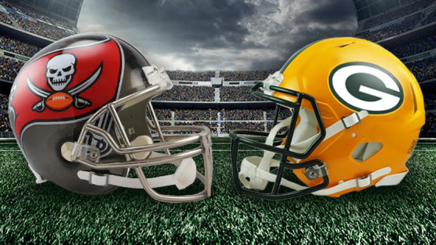

NFC Conference Championship
(5) Tampa Bay Buccaneers at (1) Green Bay Packers
Sunday, 3:05 p.m. ET on FOX
- Line: Packers -3.5; O/U 52
- Odds: Buccaneers 2.55 - Packers 1.50
- Bookmaker probability: Buccaneers 36% - Packers 64%
- ESPN predictor: Buccaneers 47% - Packers 53%
- Pre-game info
